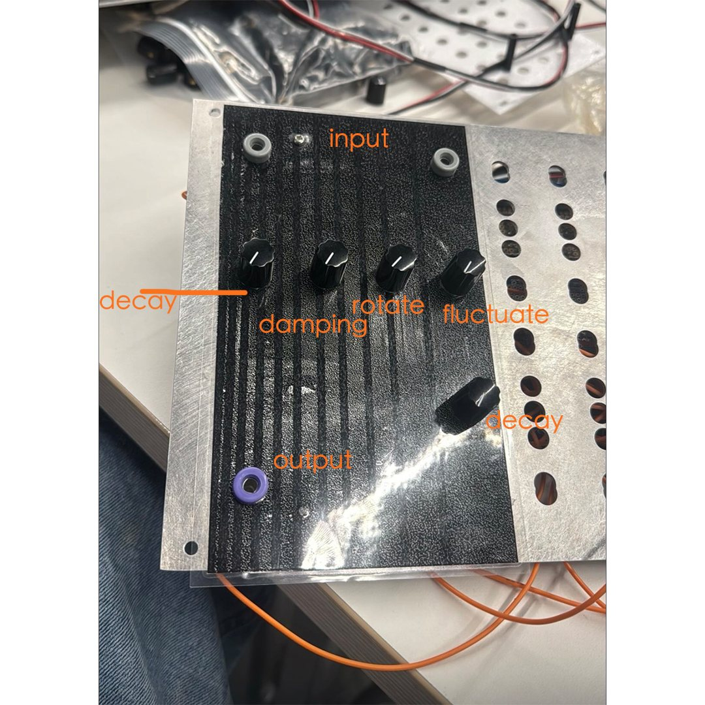
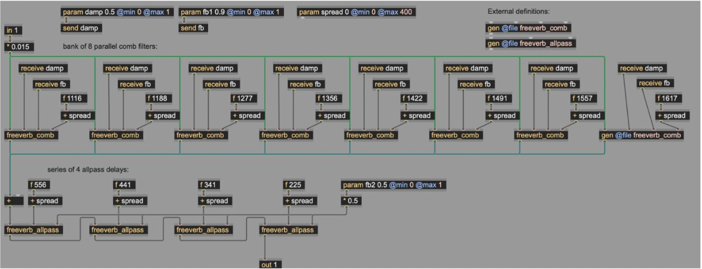
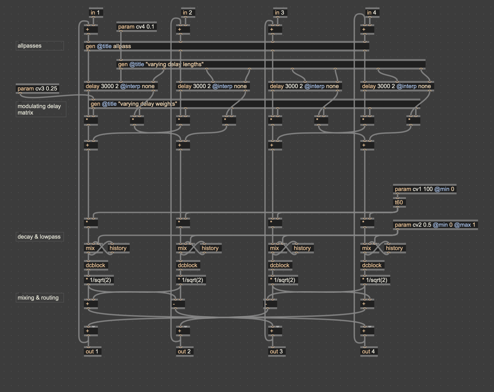
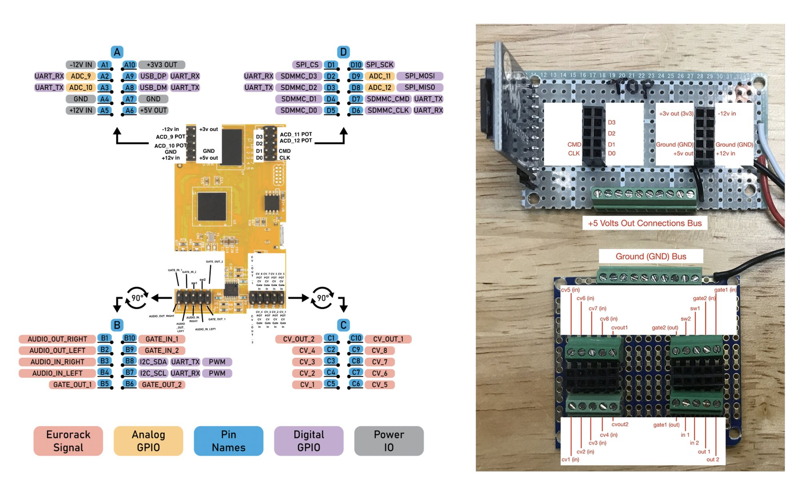
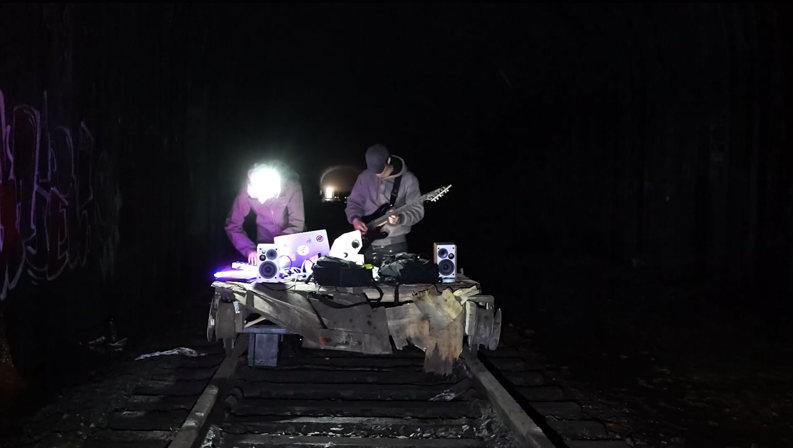
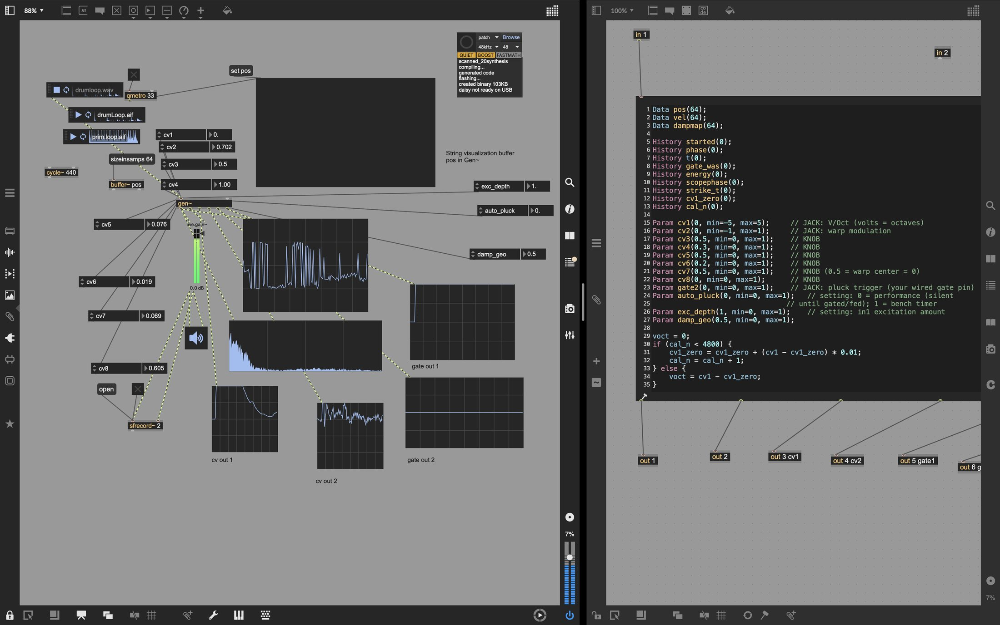
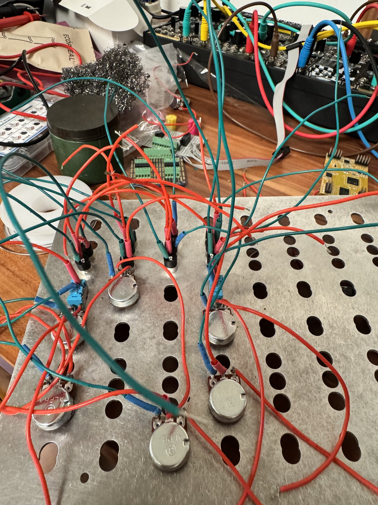
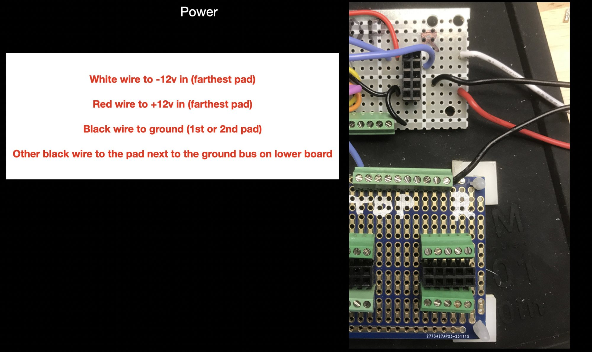

Two Instruments / Modules
Two Instruments
BOO
Gano Street Tunnel Inspired Reverb Module in Serge Format — 2025
Living Wavetable Oscillator
Scanned Synthesis — 2026
| Hardware | Electrosmith Daisy Patch SM, custom breakout and panel fabrication, Eurorack power cable |
|---|---|
| Software | Max/MSP gen~, Daisy embedded firmware |
Overview
Two hardware instruments, a reverb that carries the memory of an abandoned railroad tunnel, and an oscillator in which its waveform is governed by physics. The two were built a year apart with a similar pipeline. DSP designed in Max/MSP’s gen~ environment, exported and flashed to an Electrosmith Daisy Patch SM inside of hand-built hardware. One for Serge format and one for Eurorack. Both of which replace something stored with something that behaves. A convolution reverb records a space and replays it forever. Identically, BOO module translates the character of a space into an algorithm that never repeats itself. A wavetable oscillator reads through a stored table, repeating one cycle until the table is swapped. The Living Wavetable makes the table itself a physical model. BOO reaches toward a real tunnel it cannot fully capture, while the oscillator’s circular string, its last node joined to its first, is a technique that the original authors of scanned synthesis deemed physically impossible. One imitates the real and the other exceeds it. Both play on behaviour.

It started with a place, Gano Street railroad tunnel in Providence, Rhode Island. 5080 feet in length stretching from Gano Street to Benefit Street running under the entirety of College Hill. It lost its last rail service in 1976 and has been sealed since the 90s. Most people who live above don’t know of its existence. A piece of infrastructure operating below awareness. Its function was stripped away, what survived was its acoustics. A mile of void left with nothing but to resonate low and heavy. In its silence, it has accumulated a second life of rumor and folklore, a space remembered only as an echo.
The conventional way to accurately capture a space is through convolution. Record an impulse response and the tunnel becoming a preset. The module in my mind was never about accuracy. It is a gesture toward how lived space can be stored and represented. The tunnel’s perceptual qualities translated by ear and judgment into computational behaviors. The module holds the tunnel’s memory the same way the city of Providence holds it. Not as data but as incomplete memory.
Technical system
The core of the Serge format module is a four channel feedback delay network built in Max gen~. My entry point into reverb design was the classic Freeverb algorithm. Schroeder’s architecture of parallel lowpass-feedback combs feeding series allpasses. It taught me how decay, damping and diffusion are constructed. It was also clear that structurally it could not represent the tunnel. Because Freeverb’s combs never exchange energy, the reverb is the sum of eight independent resonators ringing side by side. Its echo pattern is fixed by comb tunings, density is constant, therefore its character is recognizable, “Freeverb sound”. Same for every input, every time.

gen~: eight parallel combs into four series allpasses.BOO module’s architecture takes on a departure. Instead of each delay feeding back into itself, all four outputs pass through a shared mixing matrix that redistributes every line’s energy into every line’s input on every pass. Reflections multiply combinatorially with each circulation through the matrix compounds the number of each distinct echo path, so in that sense density grows over time the way it does in a real enclosure, rather than fixed arrival. The matrix is energy preserving, normalized at 1/√2. The network sustains very long decays without the instability of raw cross-feedback. Diffusion moves to the front where input passes through an allpass stage before entering the loop, smearing transients so that discrete echoes dissolve into texture during the recirculation phase and not as an output polish. DC-blocking is added on every channel to keep the feedback path stable.
Rotate drives a phasor through paired sine/cosine functions that continuously turn the matrix weights, so that the routing between delay lines is not a fixed wiring but a revolving one therefore energy wanders through the network and reflections never fall into repetition. Fluctuations govern the delay length themselves, which are set by sampled noise, white noise through a sample and hold, scaled up to 70ms. Within Freeverb, both of these variables are constant by design, here they become expressive controls. Decay passes through a t60 conversion, so the knob sets how long the space takes to fall silent rather than a feedback coefficient and damping is a one-pole lowpass placed inside the feedback loop. Reverb darkens as it decays, similarly to how air absorbs high frequencies as sound travels.
The module has a second identity. A random oscillator sharing the same
enclosure. White noise sampled through a clocked sample and hold
(latch) is scaled to 20-2000Hz and drives a sine oscillator and a
click~ that can excite the reverb network into ringing on
its own.

gen~ — four delay lines, the rotating matrix, T60 decay, damping inside the loop.The hardware is built on the Daisy Patch SM with a hand-wired breakout, screw-terminal busses for power, ground, CV and audio I/O on protoboard behind an aluminum panel carrying the four knobs and I/O.

Performance
Returning to the Tunnel where it inspired the creation of this module. A recorded performance was staged inside the Gano Street Tunnel itself with sound pieces performed in combination with the Serge Modular Synthesizer and live guitar. The space gave birth to a hardware and it returned to its birthplace to pay homage. Electronic tunnel and the physical tunnel reverberating each other.

BOO reverb module answers how a space can be held in an instrument. This project extends that logic and asks the same but for a waveform. It initially began as a dual wavetable oscillator, from scratch homage to classic Eurorack modules, including two oscillators with morphing tables, detune and a wavefolder. It became a research project when one question took over coming directly out of Capsule’s feedback systems: what would it mean for an oscillator to be alive? Conventional wavetable synthesis proposes the oscillator to scan stored, pre-recorded waveforms and timbre only changes when tables are swapped or morphed. This is when I came across scanned synthesis. A technique introduced by Bill Verplank, Max Mathews and Rob Shaw. Here, the wavetable is running a physical model, a 64-node circular string governed by mass-spring-damper physics, struck, stirred, driven by external voltages or audio, ringing and settling according to Newton’s laws of motion, all the while, an independent scanner reads the string’s shape out as audio. The physics evolve at haptic rates, the speed of a hand plucking a string, while pitch belongs to the scanner’s scan speed. Timbre and pitch become independent of one another. Manipulating the string’s matter freely while it sounds without pitch consequence. The waveform inhabits real world physics.
Research and development
The instrument was built line by line in Max gen~’s codebox with one variable change per iteration. I also built a visualization block in Max by buffering pos data, where the string’s position array is exposed as a buffer and drawn live at 30 fps alongside a scope and spectrogram. Watching the pluck ripple and fade turned every experiment into an audiovisual measurement rather than guesswork. The interface was decided by evidence. Pluck position was implemented and tested at first and it does work visibly on the spectrogram, however it was too subtle in its effect on sonic qualities to justify its implementation. (The strike location selects which modes, the string’s natural patterns of vibration, each with its own frequency, ring, with nulls where the strike lands on a point where a given mode doesn’t move.) Its seat instead went to pluck width. A narrow strike is a spike, snapping across the full spectrum. A wide strike is a broad bump, a low thump. Warp bends the scanner’s read position by a sine of itself, phase distortion applied to a living wavetable, redistributing how long the scanner dwells on each region of the ring. Wavefolder whose drive rides the string’s decaying energy completes the voice. Loud attacks fold hard, tails clean up on their own.

Translating it to hardware follows a similar method to the BOO module using Electrosmith Daisy as the central piece. Six potentiometers and eleven 3.5mm mono jacks wired to the Daisy on protoboard. Verifying each connection with a multimeter was crucial as any short could cause irreversible damage to the Daisy.


Two later experiments completed the module’s identity. One being external audio excitation and second being the ability for the module to report on itself, an energy follower. Audio from the input jack is applied as physical force onto five nodes of the ring, added into the same F = ma calculation as every other force, which transforms the string into a driven resonator. The first public implementation of scanned synthesis appeared in Csound, open source synthesis language. Paris Smaragdis, then at the MIT Media Lab, coded scanned synthesis technique into a pair of opcodes in March 2000 called scanu, which defines the mass-spring network, its masses, damping, centering forces, and connection matrix and sets it in motion and scans which follows a trajectory and reads the shape out as audio. Among scanu’s input is ain, “audio input that adds to the velocity of the masses” (Smaragdis). Audio injection into the model has been a part of the canonical implementation from the start. Csound takes the incoming audio and implements it into the mass’s velocity.
Since kinetic energy is proportional to velocity squared, summing v² across all 64 nodes every sample gives a single number of how alive the string is at a given point in time. Smoothed by a one pole filter so it decays like a real reading rather than flickering. That number can leave the module as CV output. A second slow scanner reads the same position array at 30Hz and outputs the string’s shape, meaning any oscilloscope will have the ability to draw out the waveform. Two gates externalize the physics as timing, where a trigger fires per strike and a gate holds high while energy exceeds a certain threshold. Gate’s duration is measured from the simulation, which means the damping knob controls the gate’s width, thus turning damping down and the gate stretches and vice versa.
- Boulanger, Richard, Paris Smaragdis, and John ffitch. “Scanned Synthesis: An Introduction and Demonstration of a New Synthesis and Signal Processing Technique.” Proceedings of the International Computer Music Conference, Berlin, 2000.
- Schroeder, Manfred R. “Natural Sounding Artificial Reverberation.” Journal of the Audio Engineering Society, vol. 10, no. 3, 1962, pp. 219–223.
- “Scanned Synthesis.” The Canonical Csound Reference Manual, csound.com/docs/manual/SiggenScanTop.html.
- Smaragdis, Paris. “scanu.” The Canonical Csound Reference Manual, csound.com/docs/manual/scanu.html.
- Smith, Julius O. “Freeverb.” Physical Audio Signal Processing, ccrma.stanford.edu/~jos/pasp/Freeverb.html.
- Verplank, Bill, Max Mathews, and Robert Shaw. “Scanned Synthesis.” Proceedings of the International Computer Music Conference, Berlin, 2000. ccrma.stanford.edu/~verplank/S2S/ScannedSynthesis.PDF.